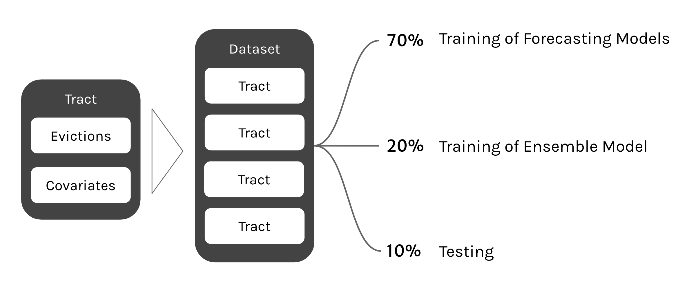
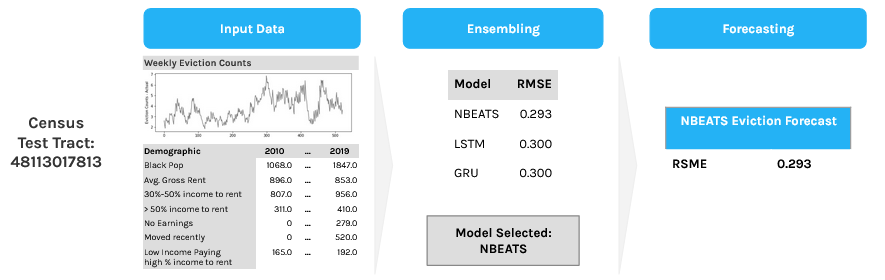
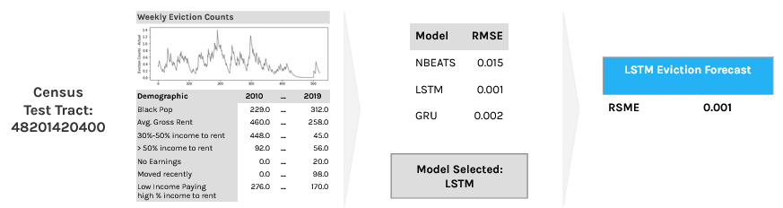

BERKELEY MIDS CAPSTONE
Forecasting Eviction Rates
Project Team: Young Koung Kim, Joshua Noble, Elaine Chang
Project Advisors: Fred Nugen, Alberto Todeschini
Our Goal
Our goal was to create a model that uses the demographic and economic data at the census tract level in order to predict eviction rates within that census tract. This model can be used by housing advocates, drivers and designers of public policy, and emergency housing and shelter organizations to understand where need might be most acute and how much might be needed in order to forestall the predicted evictions for a given census tract. Our analysis relies on the records of eviction cases filed in civil courts across the United States, as well as data on eviction moratoria at the state, county, and municipal levels. Our project goal is to model and predict the number of eviction counts in Houston, Texas and Dallas, Texas by census tract. Using the model would require that a user provide the demographic data and historical eviction data for a census tract in order to generate a forecast. Our forecasts provide estimates with a mean error of 0.135 evictions and median error of 0.138 evictions for an eight week forecast. This means that if the model is provided the correct data, it should be able to predict the number of evictions that will occur in two months time in a given census tract to within ~0.135 evictions.
Our Data
Our eviction data was compiled from several sources. The Eviction Lab at Princeton University provided us with historical data for Dallas and Houston that ran from 2001 until 2018. For 2018 until November 2021, we collected data from Dallas County Court records and Harris County Court records and then combined that with the data from the Eviction Lab to give us a 10 year picture of the evictions in each census tract.
For demographic data, we used the US Census Bureau’s American Community Survey. As of Fall 2021 neither the ACS 1-year nor 5-year estimates were available for 2020 or 2021, so we’re making use of data from 2010 to the end of 2019 in order to build our model. We believe that adding in collected data from 2020 paired with the associated demographic and economic data would lead to the same forecasting power.
The American Community Surveys include several thousand variables that describe each census tract. We wanted to select characteristics with statistical power that would help us create the most accurate forecast when included with the historical eviction data for that tract. We selected this by using a panel regression to help us identify which demographic statistics are most important over our 10 year time-frame. The formula that we followed uses the following variables:
| ACS Code | Value |
|---|---|
| A03001_003 | Total Population Black or African American |
| A06001_005 | Average Gross Rent for Renter-Occupied Housing |
| A08002B_003 | Households paying 30-50% of income in rent |
| A10039B_009 | Households paying 50% or more of income in rent |
| B18002_002 | Residents who moved within the same county in the last year |
| B18002_003 | Households with no earnings reported in the last year |
| A10011_003 | Household income of $20,000-$34,999 spending >30% of income on rent |
smoothed ~ A03001_003 + A06001_005 + A08002B_003 + A10039B_009 + B18002_003 + B18002_002 + A10011_003 + entity_effects
When run as a Panel Regression this gave us an R-squared (Between) of 0.9592 an R-squared (Within) of 0.4564 and an R-squared (Overall) of 0.6482. This gave us confidence that we had adequate covariates for our time series analysis. However, forecasting evictions is neither strictly a time series problem nor strictly a regression problem, but rather a combination of the two. To remedy this we used RNN based architectures for the time series of evictions counts and combined that with a time series of the demographic changes from 2009-2019.
Modeling Process
Our model is an ensemble approach which uses four underlying predictor models to generate forecasts for eviction rates and then an ensembling model to select which forecasting model should be selected to provide the forecast. Certain models do better with certain sorts of data than others so an ensemble approach made the most sense in order to use the strengths of each models while not being constrained by their weaknesses.
The training data is used to train each forecasting model. The forecasting results and the information about each tract is then passed to an ensembling model which learns which models perform best for the different characteristics of each tract.

In order to use the model, the historical evictions and demographics of the tract should be passed to the model, which would then be able to select the appropriate forecasting model and create the forecast.

Modeling Results
We trained our forecasting models on 70% of our data and then trained the ensembling model on 20% of our data, leaving 10% for testing. This 10% was 110 census tracts across Dallas and Houston. To view how each tract performed hover over a tract. The results on the right will update to show how our model performed in each tract.
Results on test tracts in Dallas County
This map shows the characteristics of test tracts in Dallas and how those performed using two metrics: Root Mean Squared Error (RMSE) and Mean Absolute Squared Error (MASE).
Tract ID:
Eviction Forecast For Tract
Forecast Evictions for week of 12/29/2019:
Actual Evictions for week of 12/29/2019:
Average claim for tract:
Total forecast claim amount:
Tract Demographics
Total Population Black or African American Alone:
Average Gross Rent for Renter-Occupied Housing Units:
Households paying 30-50% of income in rent:
Households paying 50% or more of income in rent:
Residents who moved within the same county in the last year:
Households with no earnings reported in the last year:
Household income of $20,000-$34,999 spending >30% of income on rent:
Model Performance
Best MASE Model:
Best MASE
Average MASE:
Best RMSE:
Average RMSE:
Results on test tracts in Harris County
This map shows the characteristics of test tracts in Houston and how those performed using two metrics: Root Mean Squared Error (RMSE) and Mean Absolute Squared Error (MASE).
Tract ID:
Forecast Evictions for week of 12/29/2019:
Actual Evictions for week of 12/29/2019:
Average claim for tract:
Total forecast claim amount:
Tract Demographics
Total Population Black or African American Alone:
Average Gross Rent for Renter-Occupied Housing Units:
Households paying 30-50% of income in rent:
Households paying 50% or more of income in rent:
Residents who moved within the same county in the last year:
Households with no earnings reported in the last year:
Household income of $20,000-$34,999 spending >30% of income on rent:
Model Performance
Best MASE Model:
Best MASE
Average MASE:
Best RMSE:
Average RMSE:
Acknowlegements
A huge thank you to the w210 instructional team - Fred Nugen, Alberto Todeschini and Colorado Reed
Also a huge thank you to the subject matter experts both inside and outside the UC Berkeley School of Information who helped us:
- Mike Rivera
- Elizabeth Resor
- Aishah Newsom
- Zoe Kahn
- Saira Rahman
Technical Details
1) Selecting the timeline:
We focus our model building, testing and reporting with a timeframe from 2010 to 2019. As of Fall 2021 neither the ACS 1-year nor 5-year estimates were available for 2020 or 2021. Furthermore, while we have eviction data to present day Fall 2021, the COVID eviction moratoriums federally ordered for the majority of 2020 and 2021 represent a forecasting of ‘special events’ of unexpected drops/jumps or zero frequencies. We believe our findings on the technical approach to eviction forecasting can be applied post-COVID with additional data and retrospective reflection.2) Smoothing the data:
A distribution of weekly eviction counts reveals that 57% or the weekly eviction counts by census tracts show zero evictions in the week, with a max weekly eviction count of 71 evictions in one census track observed. This irregular, non-smooth distribution presented challenges in forecasting. The jagged nature of eviction data becomes clear when examining the 10-year eviction trend of a single tract. Thus we apply simple exponential smoothing on the data. In comparing our actual vs. predicted evictions of non-smoothed (left) data vs. smoothed data (right) with exponential smoothing, we see a smoother trend line emerge while still capturing the general movement of the data.4) Differencing to detrending the data:
Additionally, we observed that our data was heavily trended and did not exhibit much stationarity. Of the 882 census tracts in our dataset, a little of a quarter pass the KPSS test for stationarity and an eighth pass the ADF test for stationarity with a p-value > 0.05. Only 11 census tracts pass both the ADF and KPSS stationarity tests, which would be a preferred assumption for time series forecasting. In order to de-trend the data, we took the difference of the eviction counts day rather than the actual count of evictions themselves. Using one tract as an example, the top graph is the trend of actual eviction accounts. Strong seasonality is observed throughout the data and timeline. The trend is displayed in the second graph, the seasonality is the third graph and the fourth bottom graph is the residuals. We see minimal seasonality displayed over time while residuals are high reflecting deviation from the location, indicating a strong trend that differencing would massage for model building.4) Demographic Covariate Selection:
There are about 2,000 demographic variables for each census tract through the American Community Survey. We conducted a literature review, subject matter expert interviews and exploratory linear regression data analysis to identify this set of 7 ACS demographic variables that would be high impact covariates with predictive power. Below is the set of variables identified. We selected our set of seven demographic covariates and ran a Fixed Effects panel regression with the covariates and our full time series eviction dataset. Our panel regression showed a high R2 value for the between panels measurement at 0.98 between tracts that indicated a selection of neighborhood factors distinguishing one tract from another. Additionally, the within R2 value for within panels was low at 0.45 which indicated that these demographic variables alone would not be a strong predictor of evictions and strengthened our approach to investigate the combined predictive power of demographic variables with our eviction count time series. Additionally, we established that there was not a high level of multilinearity observed in our identified set of covariates. Qualitatively, our literature review and expert conversations further substantiated the observed neighborhood factors driving evictions stemmed from income level, and racial/ethnic groups and renter population in a neighborhood.Ultimately, our dataset consisted smoothed differenced weekly eviction counts from 2010 to 2019, across the 882 census tracts of the Dallas and Houston cities accompanied by seven annual demographic variables of those tracts.
Our data was split into three sections: data used to train the forecasting models, data used to train the ensembling model, and data used to test both the ensembling and the forecasting together:

Output Series Length: 10
Stacks: 4
Blocks per Stack: 16
Layers per Block: 4
Layer Width: 512
Training Epochs: 20
Output Series Length: 4
Hidden Layer Size: 20
Learning Rate: 1e-3
Training Epochs: 20
Output Series Length: 4
Hidden Layer Size: 20
Learning Rate: 1e-3
Training Epochs: 20
Our primary evaluation metric is the Root Mean Square Error based on our observed data and problem statement. Our observed data in the eviction data resembles a Poisson distribution with distinct count values with many 0 values (over 50% of our eviction count data are 0s).
There are a number of metrics to consider when evaluating prediction measures - Mean Squared Error (MSE), Mean Absolute Deviation (MAD) - to name a few. Of the standard performance metrics, RMSE better reflects how a forecast responds to outliers. Forecasts that optimize for MAE, MSE or MAD may pull predictions towards the mean, which in our observed eviction dataset are primarily between zero and one.
We illustrate this with two example census tracts. Both trend lines in blue do not adequately respond to the observed outlier data. Rather they move with the general trend. RMSE and MASE is more sensitive to outliers and spikes and is better able to capture the irregular peaks and valleys of eviction patterns. Both were used to evaluate the performance of our forecasting models as well as the models selected in the ensemble approach.
We see that there is not only one definitive model that performs better than the other two. While NBEATS has the most number of test tracts with the lowest RMSE, it only covers half of the test tracts. The average RMSE of these predictions, regardless of the best performing model was around 0.13, which indicated an encouraging direction of accurate forecasting.
We examine model performance against different census tract to understand differentiating data factors either historical evictions or demographic covariates used as part of model training. In the table to the right, the highest value of the three is green while the lowest value of the three models is yellow.
| NBEATS | LSTM | GRU | |
| Number of Census Tracts | 78 | 31 | 50 |
| Avg. Total Evictions | 725.5 | 211.3 | 315.8 |
| Avg. Latest Evictions | 1.6 | 0.5 | 0.5 |
| Avg. Total Black Population | 1,386.8 | 606.5 | 724.8 |
| Avg. Gross Rent | 906.3 | 567.8 | 833.3 |
| Avg. Paying 30%-50% of income on rent | 376.8 | 218.7 | 240.9 |
| Avg. Paying > 50% of income on rent | 162.0 | 70.2 | 108.3 |
| Avg. No Earnings | 215.8 | 105.5 | 141.9 |
| Avg. Moved Residents | 226.0 | 112.1 | 143.6 |
| Avg. Low Income Paying high % of income on rent | 291.5 | 206.6 | 255.1 |
The ensemble model outperformed each of the respective forecasting models when measured by RMSE and slightly outperformed each of the forecasting models when measured by MASE.
Two real world census tract showcase how the ensembling model works end-to-end.
The first example shows a census tract that shows a relatively large number of historical evictions, black population in census tract and high percentage of low income variables. The ensemble model selects NBEATS as the forecasting model and predicts a 10-week prediction that has a RSME of 0.293.
While the second census tract example shows LSTM as the selected ensemble model due to its relatively lower average eviction and covariate input values.
